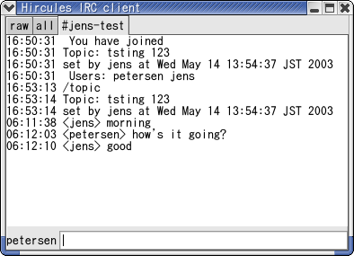

Hircules - an IRC client in haskell
Hircules (pronounced like the Greek hero) is an IRC
client written in Haskell. The code was initially
based on lambdabot
and uses gtk2hs for
the UI. It currently supports tabs
for channels and private dialogs, but it is still
quite primitive. I'm planning to add more features like
completions, coloring of nicks
and conversations, better keybindings and UI, etc (see
the TODO file for a longer list).
Hircules has a SourceForge project page.
Here's a screenshot of hircules-0.1 running:

News
- 2003-07-03 Hircules 0.2 released
- Hircules 0.2 is now available from the SourceForge project page.
- The News and ChangeLog files contain details about the latest changes, fixes and new features.
- To build it yourself, you'll probably need a pretty current gtk2hs. (An recent snapshot rpm is availble from Haskell rpms)
- 2003-05-16 Hircules is now hosted on SourceForge.Net.
- Hircules now has a project page on SourceForge.Net.
- A CVS repository and a mailing-list have been setup.
- 2003-05-15 Hircules 0.1 released (first release)
Features:
- tabs for channels and private dialogs
- raw irc tab
- all channel tab
- lambdabot extension modules can be used, though most of them are disabled by default currently
Building
To build Hircules you need:
- ghc, the Glasgow Haskell Compiler (ghc-5.04.3 is known to work for gtk2hs)
- gtk2hs, a GTK 2 Binding for Haskell (you probably need cvs HEAD).
- Optionally lambdabot 1.0

Jens Petersen
Last modified: Thu Jul 3 21:48:30 JST 2003